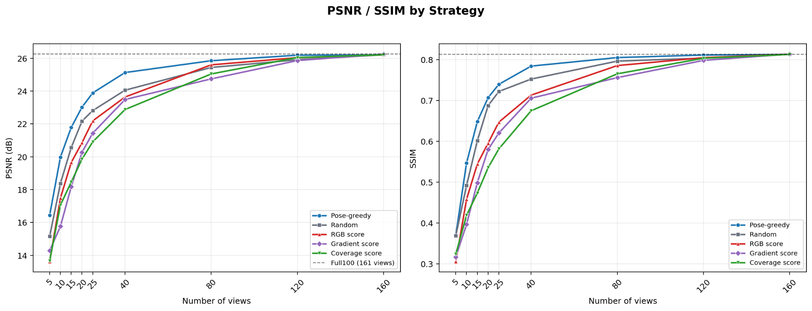

Data-Efficient 3D Reconstruction: View Selection via Dataset Distillation
Built a robot-camera-to-3DGS pipeline end to end and designed distillation-style view selection to keep a small, informative subset of frames, with pose-greedy selection best on PSNR/SSIM at small view counts.
Overview
3D Gaussian Splatting (3DGS) [1] builds a 3D scene from many posed images. A robot camera stream gives far more frames than reconstruction needs. This project asks which input views to keep, and uses a distillation-style setup to select a small, informative subset instead of training on every frame.
Goal stated in the project slides: a camera-to-3DGS pipeline that uses 50% of the frames (baseline: 100%).
Motivation
- A 2D image stream only delivers the current frame. To understand space (passages, obstacles, depth), a robot needs one 3D representation that merges many observations and can be reused for SLAM, mapping, and navigation.
- Among candidate representations (raw image sequence, point cloud / RGB-D, mesh / TSDF, NeRF [2], 3DGS), 3DGS was chosen as the best balance of expressiveness and practicality: it starts from RGB alone, its explicit Gaussians expose scene structure directly, and depth can be added later.
Problem
Early 3DGS trials on a real robot image stream showed that a good image stream is not the same as good reconstruction input:
- Consecutive frames are highly redundant, with very small viewpoint changes.
- Viewpoint diversity may not be sufficient.
- Blur, dropped frames, and uneven quality appear in the stream.
- So using every frame is not always best. The task becomes selecting keyframes to improve the reconstruction quality / cost trade-off.
Method
- Pipeline. RGB-D images from a RealSense camera are published from a Jetson over a CycloneDDS topic and subscribed by the host system, which feeds them to 3DGS.
- Baselines. Uniform stride, random, and angle-based sampling, compared with training on the full view set.
- Distillation-style selection. The classification task of knowledge distillation is recast as input-view selection. A teacher 3DGS is trained on all images and a student on the selected images. The student is trained with the standard 3DGS loss against ground-truth images, plus a term that matches its rendered RGB images to the teacher's renderings.
- View scores explored. Rendered-RGB score, gradient (view update) score, Gaussian visibility coverage, and pose diversity between views (pose-greedy).
Results

- PSNR and SSIM were measured as the number of selected views grows from 5 to 160, against the full set of 161 views.
- Pose-greedy selection gave the highest PSNR and SSIM at small view counts. All strategies approach the full-view quality as the number of views grows toward 160.
Source: project progress slides (May 2026), “Result” slide.
My Role
- Built the CycloneDDS image-streaming pipeline (RealSense on Jetson, publish/subscribe to the host) that provides the reconstruction input.
- Ran the baseline 3DGS reconstructions and the frame-sampling baselines, and analyzed frame redundancy in the robot stream.
- Designed the distillation-style view-selection setup and compared view-scoring strategies on PSNR / SSIM.
Tech: 3D Gaussian Splatting, PyTorch, CycloneDDS, Intel RealSense, NVIDIA Jetson.
Next Steps
- Improve the distillation architecture.
- Validate on other scenes and datasets.
- Run it on the real camera pipeline.
References
Background work only; not results from this project.
- B. Kerbl, G. Kopanas, T. Leimkühler, G. Drettakis. 3D Gaussian Splatting for Real-Time Radiance Field Rendering. SIGGRAPH 2023.
- B. Mildenhall, P. P. Srinivasan, M. Tancik, J. T. Barron, R. Ramamoorthi, R. Ng. NeRF: Representing Scenes as Neural Radiance Fields for View Synthesis. ECCV 2020.
- G. Hinton, O. Vinyals, J. Dean. Distilling the Knowledge in a Neural Network. arXiv:1503.02531.